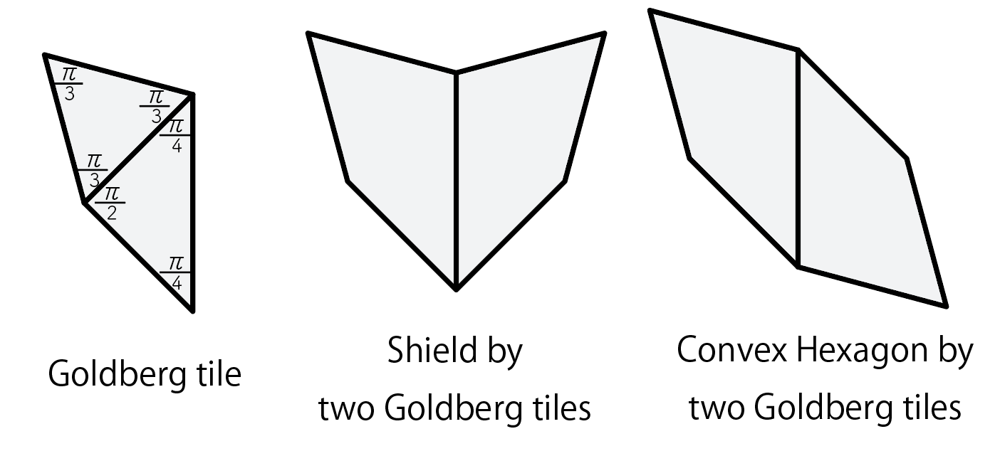
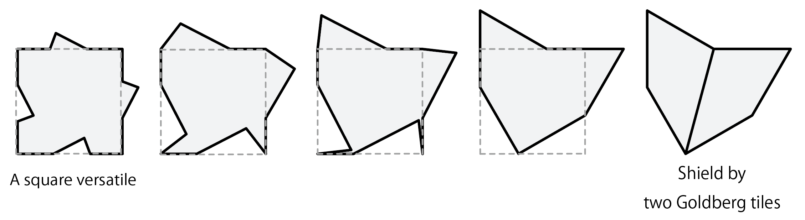
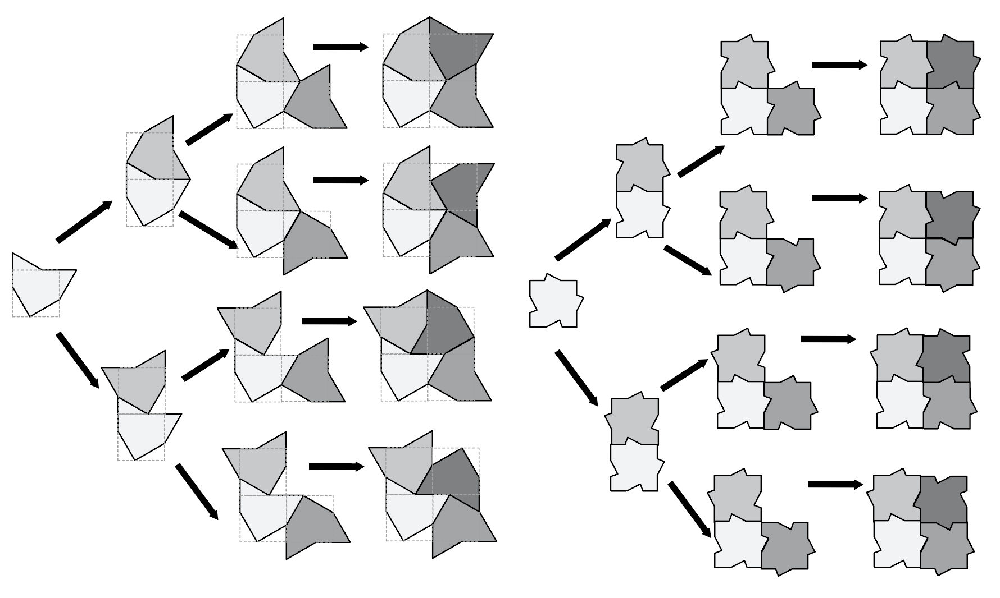
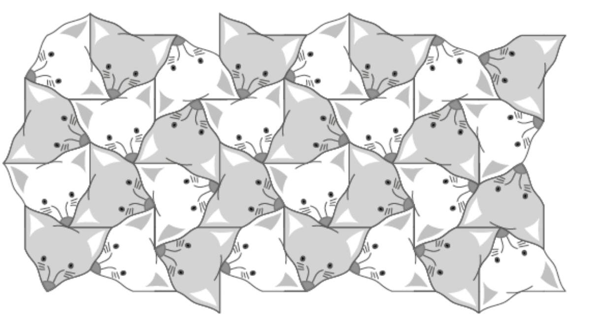

Goldberg variations(1)
Random tilings of Goldberg tile with Square Versatile
A Goldberg tile is an asymmetric quaralaterals which can be devided into two parts: a regulartriangle and a right isoscele triangle.
Shield and Convex are two different equilateral hexagons made by gluing two Goldberg tiles.

Shield can be obtained by deforming one of square versatiles[1]. A square versatile have four identical deformable edegs and admits infinity of disct tilings.

A squre versatile can tile the plane with a very easy steps by extending L shape to nxn square. (See [1] for more details)
Shield can also tile in the same manner because shield is just a deformation of a square versatile.

Here is an example of large tiling.

As you can see, this step is equivalent to coloring sub square tiling.
You can try coloring the divided sub square tiling from
web app.
Here is a fox faces tessellation based on shield I drew for an artcle on Tessellation puzzle for math teachers.

Reference
[1] SQUARE VERSATILE TESSELLATIONS
Yoshiaki Araki (2019)
Symmetry: Art and Science, 2019 – 11th Congress and Exhibition of SIS
[2] Yoshiaki Araki,Fox faces, April 2019.
Yoshiaki Araki (Japan Tessellation Design Association), March 24, 2021.